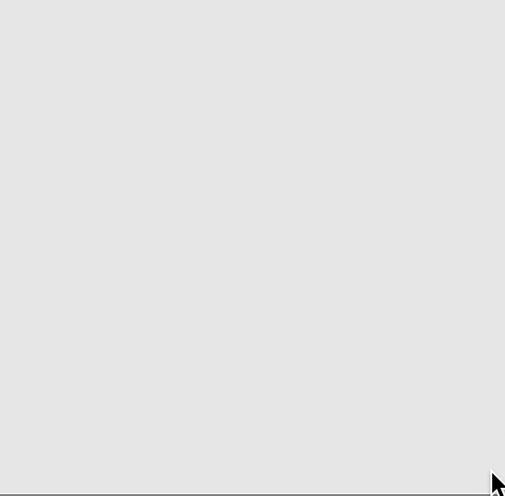
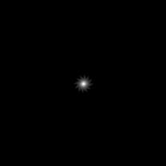
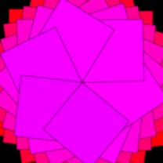
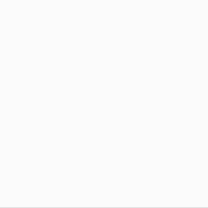

TBD:
Lesson 6
Spins and Spirals
In this lesson, you'll learn how to draw lines and how to make beautiful spinning shapes.


1. Lines
Tinker
Click ▶Play. You'll see
that a line has been added to the screen.
Try these challenges:
Change one number in the line
command to make the line longer. Be sure to click ▶Play.
Change two numbers in the line
command again so that the line is lower on screen but still
points straight across. Be sure to click ▶Play.
Change the line
command again so that
one end is at the lower left corner of the canvas and
the other end is at the upper right, making a diagonal.
Be sure to click ▶Play.
2. Rotate
Tinker
Click ▶Play.
You'll see the line again, along with an empty ellipse at its end.
Try this challenge:
Find the new rotate
command. Change the number 0 to a small decimal
like 0.3 and then click ▶Play.
What happens? Try some other small numbers, too —
numbers less than 1.5, or else the line will rotate off screen.
Explanation
The rotate
command rotates the canvas and everything on it around
the point 0, 0, which is the top, left corner
of the screen. You can see this rotation in the picture below.
Positive numbers rotate clockwise, and negative numbers rotate counterclockwise.

3. Translate
Tinker
Click ▶Play.
You can use a command called translate to move the
point (0, 0) to a different location on screen.
In this example, we've moved 0, 0 to the center
of the canvas, which is 125 pixels to the right and 100 pixels down from the
top, left corner. Let's investigate how translate works.
Try these challenges:
In the translate command, change the first argument to
any number between 0 and 200, for now.
Click ▶Play.
What happens?
Change the second argument within the translate command.
Then click ▶Play.
What happens?
4. Translate Then Rotate
Tinker
Click ▶Play.
The line and the ellipse rotate around the center of the screen endlessly.
There's also a new variable r.
Let's investigate how they're connected.
Try these challenges:
Find the command that varies or changes the rotation.
Change the number in that command and then press ▶Play.
If you found the correct command, your animation should change.
Change that same number again a few times,
clicking ▶Play after each change to see the effects.
Change that number again to make the
line and ellipse rotate in the opposite direction.
5. Stop the Animation
Tinker
Click ▶Play.
The line and ellipse stop rotating after awhile.
Notice the new command if at the end
of the script. In this command,
the symbol > means "greater than." Remember that the variable
r is getting bigger and bigger.
When it becones greater than 5, the command noLoop
stops the animation.
Try this challenge:
In the if command,
change 5 to some other numbers, both larger and smaller.
Click ▶Play after each
change to see the effect.
6. The Number PI
Tinker
Click ▶Play.
The line and ellipse neatly divide the canvas into
8 sections and appears to be stopped. Let's investigate.
Try this challenge:
Locate the command
r = r + PI/4. The symbol PI
represents the number pi (pronounced "pie"). As you may know, pi
is the ratio of the circumference of a circle to its
diameter. This ratio is always near 3.14159265...
The symbol PI/4 means "pi divided by 4."
Change the divisor 4
to another small number and then click ▶Play.
How many equal sections of the canvas do you see now?
Change the divisor again several more times,
clicking ▶Play after each change.
Can you find a pattern between the divisor and the number of sections?
6. Use Variables for Position
Tinker
Click ▶Play. We've replaced the line with an ellipse. How does the ellipse change?
Try these challenges:
As the canvas spins, each new ellipse moves a little further from the center.
What part of the code moves the ellipse?
Can you change the code so that each ellipse appears even further out than its previous neighbor?
Can you change the code again so that each ellipse still moves outwards but is very close to its neighbor?
The starter code use the variable r to change the ellipse's x-coordinate.
Try using r to change the y-coordinate too.
Just for fun, change the color and size of the ellipses.
Use regular numbers, not variables.
Try making very long and narrow ellipses or big circular ones
with your favorite color or random colors.
TBD. NEEDS A TIME-LAPSE GIF ILLUSTRATING THE MOVEMENT A LITTLE FURTHER OUT AND ROTATION. MAYBE THIS SHOULD COME BEFORE TRANSLATE/ROTATE? MAYBE LESSON 6 SHOULD COME BEFORE LESSON 5?
7. Use Variables for Size
Tinker
Click ▶Play. How does the ellipse change?
Try these challenges:
As the canvas spins, each new ellipse becomes a little wider.
What part of the code changes the width of the ellipse?
Can you change the code so that the ellipses get wider a little more slowly?
a little more quickly?
Try changing both the ellipse's x-coordinate and its width
with the variable r.
8. Transparency
Tinker
Click ▶Play.
Each ellipse gets bigger and moves away from the center.
Also, the drawing appears gray at the edges and darker at the center.
There are 2 new commands:
◆ noFill() makes the inside of ellipses transparent.
◆ stroke(0, 100, 0, 0.2)
now has a fourth argument. This argument makes the stroke (borders) partially transparent,
so they appear faded.
Try these challenges:
In stroke, change the decimal 0.2 to
other decimals between 0 and 1. Find a decimal you like.
Make the stroke a color instead of black and gray.
Replace the stroke and fill commands with the two new commands below.
What happens?
fill(330, 100, 100, 0.1);
noStroke();
9. Examples
Copy each example below into the p5.js Web Editor, completely replacing any code that's already there. Play with the code to find effects that you like!
Example #1

let move = 0;
function setup() {
createCanvas(400, 400);
colorMode(HSB);
background(0, 100, 0);
}
function draw() {
translate(200, 200);
rotate(move);
stroke(move, 0, 100, 0.2);
strokeWeight(2);
line(-move, 0, move, 0);
move = move + 0.5;
if (move > 200) noLoop();
}
Example #2

let move = 360;
function setup() {
createCanvas(400, 400);
colorMode(HSB);
background(0, 100, 0);
}
function draw() {
translate(200, 200);
rotate(move);
fill(move, 100, 100);
rect(0, 0, move/2, move/2);
move = move - 1;
if (move < 0) noLoop();
}
Example #3

let move = 0;
function setup() {
createCanvas(400, 400);
colorMode(HSB);
background(0, 100, 0);
}
function draw() {
translate(200, 200);
rotate(move);
fill(move, 100, 100, 0.1);
ellipse(0, 0, 400, 16);
move = move + 0.1;
if (move > 360) noLoop();
}
Example #4
let move = 0;
function setup() {
createCanvas(400, 400);
colorMode(HSB);
background(0, 100, 0);
}
function draw() {
translate(200, 200);
rotate(move);
stroke(51, 100, 0);
strokeWeight(1);
fill(360, 100, 100);
ellipse(move, 0, 40, 8);
fill(51, 100, 100);
ellipse(move, 0, 8, 8);
move = move + 1;
if (move > 200) noLoop();
}
10. Make Your Own Project
Make your own rotation project in the p5.js Web Editor.
You can start with any of the examples above and improve the code, or
you can copy the code below for a minimal starting project.
Your project should include the commands translate and
rotate, at least one variable that you create,
and anything else you want.
Have fun! 👏
let move = 0;
function setup() {
createCanvas(250, 200);
colorMode(HSB);
background(0, 100, 0);
}
function draw() {
translate(125, 100);
rotate(move);
fill(175, 100, 100);
ellipse(0, 0, move, 10);
move = move + 1;
}